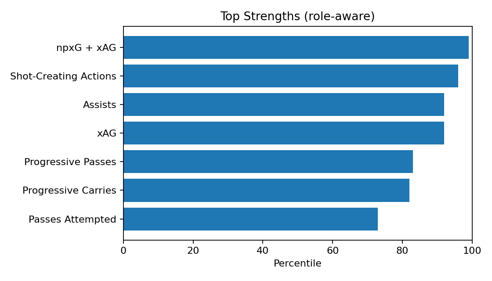
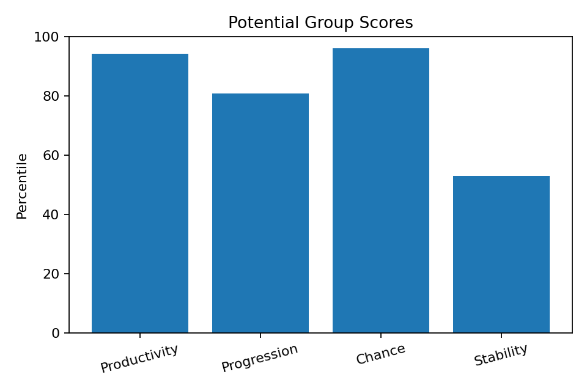
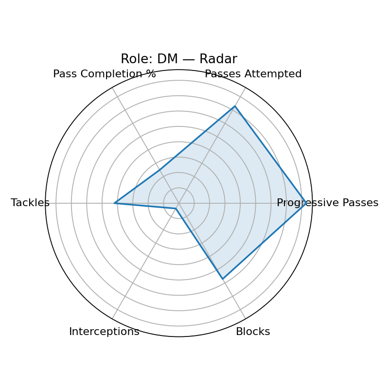

Scout Visual — Enzo Fernández
Player ID: 5ff4ab71 · Role: DM · Minutes: 3231 · Age: 24
Current: None (base None, rel None, age None)
Potential: 89.6 — Groups: 94.2/80.8/96.0/52.9
Top Strengths

Potential Groups

Role/Style Radar

Playstyle Engine
Primary: Deep-Lying Playmaker (62.4)
Top-3: Deep-Lying Playmaker(62.4), Ball-Winning Midfielder(30.0), Anchor(26.1)
근거: Progressive Passes 상위 83퍼센(강점) · Pass Completion % 하위 75퍼센(보완) · xAG 상위 92퍼센(강점) · Shot-Creating Actions 상위 96퍼센(강점)
개선: Pass Completion % 개선 필요(현재 25퍼센)
Wikipedia-derived Qualitative
Qual Score: 86.0
injury=0, discipline=5,
transfer=1, char+= 1,
char-= 0, recent_w=1.0
Wikipedia: https://en.wikipedia.org/wiki/Enzo%20Fern%C3%A1ndez
Bias Diagnostics
Mode: v3
Diversity: 0.956
Imbalance penalty: 8.6
Uncertainty penalty: 0.8
Age gain: 8.8
Narrative — Current
[현재력] 역할=DM, 최종점수=75.3 / 강점: npxG + xAG(99p), Shot-Creating Actions(96p), Assists(92p), xAG(92p), Progressive Passes(83p) / 약점(역할기반): Interceptions(4p), Pass Completion %(25p) / 기초=62.8, 출전보정=3.0, 나이표시=3.2
Narrative — Potential
[잠재력 v3] 역할=DM, 잠재점수=89.6 / 그룹: 생산94/전진80/찬스96/안정52 / 엘리트95+ 18, 99+ 2, 다양성=0.956 / 불확실성패널티=0.8, 불균형패널티=8.6, 나이이득=8.8
Coaching — Style-specific
- Progressive Passes 유지+응용: 역압박 상황 전개/선택지 추가 / 주 1회(클립 5개)
- Passes Attempted 유지+응용: 역압박 상황 전개/선택지 추가 / 주 1회(클립 5개)
- Pass Completion % 개선 루틴: 스텝별(기초→속도→압박 하) 반복 / 주 3회(20분)
- xAG 유지+응용: 역압박 상황 전개/선택지 추가 / 주 1회(클립 5개)
- Shot-Creating Actions 유지+응용: 역압박 상황 전개/선택지 추가 / 주 1회(클립 5개)
- 리버스/스루 타이밍: 마지막 두 수비자 사이 창 만들기
Growth Roadmap — Phased
- · 0~6주: 고난도 상황 반복(압박/시간 제약) 주 2세션 / 첫터치·체형 열기 루틴(매일 10분) / 프리셉션 각도 교정(45°/90°) / 리버스/스루 타이밍: 더미 2명
- · 6~12주: 압박 하 전진패스(제한터치) 반복 / 세컨드볼 후 즉시 전개 패턴
- · 12주+: SCA 70퍼센+ 달성 / 프로그레시브 패스 80퍼센+ 유지 / Progressive Passes: 83→85 퍼센 상향 / Passes Attempted: 73→80 퍼센 상향